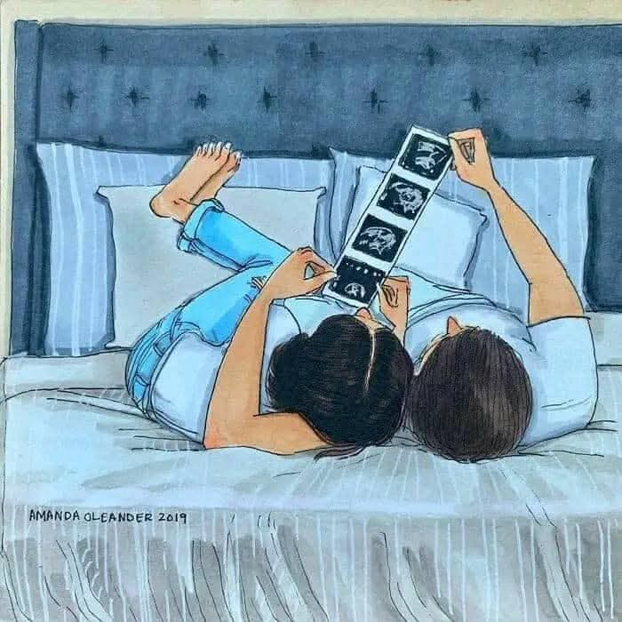

Parenthood – Làm cha mẹ

Trước khi tiếp nhận lời khuyên của một triết gia về việc làm cha mẹ, có vài điều mà bạn nên biết. Thứ nhất, một số lượng lớn trong số họ, bao gồm cả Nietzsche[1], Kierkegaard[2], Sartre[3], Beauvoir[4], Kant[5], Hobbes[6], Locke[7], Plato[8], Hume[9], Mill[10], Schopenhauer[11], Spinoza[12], Adorno[13], Popper[14] và Wittgenstein[15], chưa từng có con. Tác giả Carl Cederström[16] nhìn vào danh sách hai mươi triết gia vĩ đại nhất mọi thời đại và nhận thấy mười ba người trong đó không có con và hai trong số bảy người còn lại cũng gần như vậy, vì họ hầu như không có liên hệ gì với con cái mình.
Một điều nữa mà bạn nên biết là, trong số các triết gia có con, nhiều người không phải là những bậc cha mẹ mẫu mực. Conrad, một trong những người con trai của Bertrand Russell[17], đã trải qua mười năm thời niên thiếu mà không hề nói chuyện với cha mình, trong khi cô con gái Katherine của ông đã viết rằng ‘bóng lưng thẳng tắp và bức tường vô hình của sự tập trung nơi cha tôi đã ngăn cách ông với chúng tôi’.
Tệ hơn cả là Jean-Jacques Rousseau[18], người có năm đứa con với người vợ theo thông luật và đã khăng khăng ép bà giao tất cả cho trại trẻ mồ côi. Lý do mà ông đưa ra rất khác nhau: ông không có đủ tiền để nuôi nấng, việc giữ con lại sẽ khiến bà bị ô nhục, và sự giáo dục mà chúng nhận được tại trại trẻ mồ côi sẽ tốt hơn so với những gì mà họ có thể dành cho chúng. Chẳng có lý do nào trong số đó đủ sức thuyết phục cả.
Dĩ nhiên, cũng có những triết gia vĩ đại có con, tiêu biểu là hai trong số những nhân vật kiệt xuất nhất mọi thời đại – Khổng Tử[19] và Aristotle[20] – đã viết về tầm quan trọng của mối quan hệ tốt đẹp trong gia đình. Nguyên lý đạo Hiếu[21] (孝) của Khổng Tử nhấn mạnh sự cần thiết của trật tự trong gia đình. Sự hòa thuận trong gia đình đòi hỏi tính tôn ti trật tự, nơi cha mẹ và con cái làm trọn những vai trò khác nhau. (Xem Gia đình). Đó là lý do tại sao mà những bậc phụ huynh thật sự yêu thương con cái không thể quá nuông chiều chúng.
Lý do hiển nhiên nhất khiến các triết gia có xu hướng không sinh con là bởi vì sự hiện diện của trẻ nhỏ trong nhà không hề thuận lợi cho công việc trí óc, nhất là do tình trạng thiếu ngủ. ‘Với nghệ thuật chân chính, không có kẻ thù nào u ám hơn chiếc xe đẩy trong hành lang’ – nhận định này của tác giả Cyril Connolly[22] cũng ứng với triết học. Nhiều bậc phụ huynh-triết gia lỗi lạc đã chứng minh rằng đây không phải là một sự thật tất yếu. Tuy nhiên, sự tận tâm chuyên nhất cho bất kỳ thiên hướng nào cũng khó mà cân bằng được với những đòi hỏi của việc làm cha mẹ, ngay cả khi hai điều này không hoàn toàn xung đột với nhau. Simone de Beauvoir dường như đã nhận ra điều này khi bà nói rằng, ‘Bằng cách không có con, tôi đã thực hiện đúng thiên chức của mình.’
Trong xã hội muốn-có-tất-cả như ngày nay, cái sự thật hiển nhiên này đã bị lãng quên hoặc phớt lờ. Chúng ta không thực sự nghiêm túc xem xét quan điểm: một số mục tiêu cuộc đời đòi hỏi nhiều năng lượng và sự tận hiến đến mức chúng khiến những điều quý giá khác trở nên bất khả thi. Nếu như bạn chưa sẵn sàng để san sẻ sự tập trung của mình, hãy cân nhắc thật kỹ trước khi lập gia đình.
Sở dĩ điều này hiếm khi được nhắc đến là bởi vì quan niệm phổ biến cho rằng không sinh con là ích kỷ và làm cha mẹ giúp cho con người ta bớt vị kỷ hơn. Điều này thật vô lý. Aristotle nói rằng ‘con cái là một dạng bản ngã khác của chính mình,’ đó là lý do vì sao ‘cha mẹ … yêu thương con cái như yêu bản thân.’ Việc là cha mẹ không khiến chúng ta bớt ích kỷ đi, mà nó tạo ra một bản ngã mở rộng, một dạng cái tôi kép thường được đặt ở vị trí trung tâm vũ trụ[23] một cách vững chãi hơn cả cái tôi đơn độc trước đây của chúng ta. Cha mẹ thường làm bất cứ điều gì vì con cái, bất kể việc đó có gây thiệt hại cho người khác hay không. Chẳng hạn, việc tranh giành suất vào các trường điểm khó có thể coi là một ví dụ về lòng vị tha vì lợi ích cộng đồng.
Một lập luận cho rằng sinh con là hành động ích kỷ thay vì vị tha nằm ở chỗ: việc thỏa mãn mong muốn có một ‘phiên bản mini’ của chính bạn không hề mang lại bất kỳ lợi ích nào cho đứa trẻ cả. David Benatar thì cho rằng Thà Đừng Sinh Ra[24], như cái tiêu đề nghe vui tai trên cuốn sách của ông. Benatar đưa ra các số liệu thống kê để chứng minh cuộc đời của vô số con người chỉ toàn là đau đớn và khổ sở. Có thể điểm qua một vài số liệu như sau: trong 88 năm đầu của thế kỷ hai mươi, từ 170 đến 360 triệu người đã bị bắn, đánh đập, tra tấn, đâm chém, thiêu sống, chết đói hoặc bị giết hại bằng nhiều hình thức man rợ khác bởi các chính phủ; có 109,7 triệu cái chết do xung đột trong thế kỷ hai mươi; và khoảng 800.000 vụ tự tử mỗi năm.
Benatar khẳng định rằng ‘cuộc sống của con người thiếu những điều tốt đẹp nhưng lại thừa những thứ tồi tệ.’ Ông cũng đưa ra một lập luận đơn giản về việc tại sao không tồn tại lại là một ván cược an toàn hơn nhiều. Cuộc sống là một sự pha trộn giữa lạc thú (tốt) và đau khổ (xấu). Không tồn tại nghĩa là không có đau khổ, điều đó là tốt; và cũng không có lạc thú, nhưng tự thân điều này không phải là xấu. Nếu làm phép toán, bạn sẽ thấy rõ lựa chọn nào mang lại giá trị thặng dư cao hơn.
Thông điệp của Benatar dành cho những ai đang có ý định làm cha mẹ thật rõ ràng: ‘Không sinh con có thể khiến cuộc sống của chúng ta kém phần tốt đẹp, nhưng việc tạo ra những cuộc đời khốn khổ chỉ để thỏa mãn mong muốn của bản thân thì quả là ích kỷ vô cùng.’
Hầu hết mọi người không thấy lập luận đầy thách thức của Benatar hoàn toàn thuyết phục. Dẫu vậy, những vấn đề mà ông đặt ra là một đối trọng hữu ích đối với những diễn ngôn phổ biến ủng hộ việc sinh con trong hầu hết các xã hội. Có những lý do rất chính đáng cho lựa chọn không làm cha mẹ, và dường như thật kỳ lạ khi trách nhiệm phân bua cho sự lựa chọn của mình lại thường đổ dồn lên những người không có con, thay vì lên những người đang mang thêm nhiều người nữa vào cái thế giới vốn đã quá chật chội này.
Ít nhất thì, những bậc cha mẹ cũng nên thừa nhận rằng mong muống có con không phải là một quyết định lý trí. Schopenhauer đặt câu hỏi: ‘Nếu hành vi sinh sản không phải là hệ quả của dục vọng hay đi kèm với những cảm giác khoái lạc, mà là vấn đề được quyết định dựa trên những cân nhắc hoàn toàn lý trí, vậy thì, liệu nhân loại có còn tồn tại cho đến ngày nay?’
Đọc thêm:
David Benatar, Better Never to Have Been: The Harm of Coming into Existence (Clarendon Press, 2006)
Jean Kazez, The Philosophical Parent (Oxford University Press, 2017)
[1] Friedrich Wilhelm Nietzsche (15/10/1844 – 25/8/1900) là một nhà triết học người Đức. Các tác phẩm của Nietzsche nổi bật với phong cách viết của ông, thường mang tính ẩn dụ và nhiều nghịch lý hơn là mức độ thông thường của các bài luận triết học. Ông được xem là một nhân vật quan trọng có ảnh hưởng lớn trong triết học hiện đại.
[2] Søren Kierkegaard (5/5/1813 – 11/11/1855) là triết gia, nhà thần học, nhà thơ, nhà phê bình xã hội, và tác giả người Đan Mạch thế kỷ 19. Phần lớn nội dung các tác phẩm của Kierkegaard tập trung vào các vấn đề tôn giáo như bản chất của đức tin, định chế của giáo hội, đạo đức và thần học Cơ Đốc, tình cảm và cảm xúc của mỗi cá nhân khi đối diện với những chọn lựa trong cuộc sống. Vượt quá ranh giới của triết học, thần học, tâm lý học, và văn chương, Kierkegaard được nhìn nhận là một nhân vật quan trọng có nhiều ảnh hưởng trên ý thức hệ đương đại.
[3] Jean-Paul Charles Aymard Sartre (21/6/1905 – 15/4/1980) là nhà triết học hiện sinh, nhà soạn kịch, nhà biên kịch, tiểu thuyết gia và là nhà hoạt động chính trị người Pháp. Ông là một trong những nhân vật nòng cốt trong hệ thống triết học của chủ nghĩa hiện sinh, và một trong những nhân vật có ảnh hưởng lớn trong nền triết học Pháp thế kỷ 20 và chủ nghĩa Marx. Tác phẩm của ông cũng đã ảnh hưởng đến xã hội học, lý thuyết phê bình, lý thuyết hậu thuộc địa, phê bình văn học, và vẫn còn tiếp tục ảnh hưởng đến các ngành này.
[4] Simone Lucie Ernestine Marie Bertrand de Beauvoir (9/1/1908 – 14/4/1986) là một triết gia hiện sinh, nhà văn, nhà lý thuyết xã hội, và nhà hoạt động nữ quyền người Pháp. Mặc dù không coi bản thân là một triết gia, bà đã có ảnh hưởng lớn tới chủ nghĩa nữ quyền hiện sinh và lý thuyết nữ quyền.
Beauvoir sở hữu nhiều tác phẩm viết về đề tài triết học, chính trị, và vấn đề xã hội. Bà được biết đến nhiều nhất với "tác phẩm tiên phong trong triết học nữ quyền", Giới tính hạng hai (1949), một bản phân tích chi tiết về sự áp bức đối với nữ giới và một bản chính luận nền tảng về chủ nghĩa nữ quyền đương đại.
[5] Immanuel Kant (22/4/1724 – 12/2/1804) là một triết gia người Đức có ảnh hưởng lớn đến Kỷ nguyên Khai sáng. Ông được cho là một trong những nhà triết học có ảnh hưởng nhất từ trước đến nay.
[6] Thomas Hobbes (5/4/1588 – 4/12/1679), trong một số văn bản cổ có tên là Thomas Hobbes của Malmesbury, là một nhà triết học người Anh, được coi là một trong những người sáng lập triết học chính trị hiện đại. Tác phẩm Leviathan viết năm 1651 của ông đã thiết lập nền tảng cho nền triết học chính trị phương Tây theo quan điểm lý thuyết về khế ước xã hội.
[7] John Locke (1632–1704) là một bác sĩ, nhà triết học, nhà hoạt động chính trị người Anh. Ông là nhà triết học theo trường phái chủ nghĩa kinh nghiệm Anh trong lĩnh vực nhận thức luận. Ông cũng phát triển lý thuyết về khế ước xã hội, vai trò của nó tới chức năng và nguồn gốc nhà nước. Qua các tác phẩm của mình, ông luôn đấu tranh chống lại chủ nghĩa chuyên chế và đóng góp lớn đối với chủ nghĩa tự do cả về mặt cá nhân và thể chế.
[8] Platon, hay còn được Anh hóa là Plato, (428/427 hay 424/423 - 348/347 TCN) là nhà triết học người Athens trong thời kỳ Cổ điển ở Hy Lạp cổ đại, người sáng lập trường phái tư tưởng Platon, và Học viện Platon, cơ sở giáo dục đại học đầu tiên ở thế giới phương Tây.
Ông được coi là nhân vật quan trọng trong lịch sử triết học phương Tây và Hy Lạp cổ đại, cùng với người thầy của ông, Socrates, và học trò nổi tiếng nhất của ông, Aristotle. Plato cũng thường được coi là một trong những người sáng lập ra tôn giáo và tâm linh phương Tây.
[9] David Hume (7/5/1711 – 25/8/1776), tên khai sinh là David Home, là một nhà triết học, kinh tế học và sử học người Scotland. Ông được coi là một trong những nhân vật quan trọng nhất trong thời kỳ Khai sáng Scotland.
[10] John Stuart Mill (20/5/1806 – 8/5/1873), thường được viết dưới tên J. S. Mill, là nhà triết học, kinh tế chính trị và là công chức người Anh. Là một trong những nhà tư tưởng gây ảnh hưởng nhất lịch sử chủ nghĩa tự do, ông đóng góp trong nhiều lĩnh vực như lí thuyết xã hội, lý thuyết chính trị, và kinh tế chính trị. Mill được coi là "Nhà triết học Anh ngữ lớn nhất thế kỉ 19," tư tưởng của ông về tự do bảo vệ cho quyền tự do cá nhân đối lập với mô hình nhà nước vô hạn và kiểm soát xã hội.
[11] Arthur Schopenhauer (22/2/1788 – 21/9/1860) là nhà triết học duy tâm người Đức. Một số học giả coi các công trình triết học của ông là ví dụ điển hình của chủ nghĩa bi quan triết học. Lý thuyết siêu hình của ông chính là nền tảng cho các tác phẩm về đề tài tâm lý học, mỹ học, đạo đức học và chính trị học, Phật học.
[12] Baruch Spinoza, tên khai sinh Benedito de Espinosa, sau đổi thành Benedict de Spinoza (24/11/1632 – 21/2/1677) là một nhà triết học Hà Lan-Do Thái gốc Sephardi. Ông được coi là một trong những người tiên phong của Thời kỳ Khai Sáng và của Chủ nghĩa phê phán Kinh thánh, đề xướng khái niệm về bản thân và vạn vật, từ đó giúp ông trở thành một trong những triết gia duy lý quan trọng nhất thế kỷ 17.
[13] Theodor W. Adorno (11/9/1903 - 6/8/1969) là một nhà xã hội học, triết học và âm nhạc học người Đức, nổi tiếng với lý thuyết phê phán xã hội. Adorno được coi là một trong những nhà tư tưởng tiên phong về mỹ học và triết học của thế kỷ 20, cũng như một nhà tiểu luận xuất chúng. Với tư cách là một người phê phán chủ nghĩa Phát xít và cái ông gọi là công nghiệp văn hóa - các tác phẩm của Adorno - ví dụ như Dialectic of Enlightenment (1947), Minima Moralia (1951) và Negative Dialectics (1966) đã có những ảnh hưởng sâu sắc tới phe cánh tả châu Âu.
[14] Karl Popper (28/6/1902 – 17/9/1994) là một nhà triết học người Áo, người đề xuất các ý tưởng về một xã hội mở, một xã hội mà ở đó sự bất đồng chính kiến được chấp nhận và đó được xem như một tiền đề để tiến tới việc xây dựng một xã hội hoàn thiện. Ông cũng được xem như là người sáng lập Chủ nghĩa Duy lý phê phán (Critical rationalism).
[15] Ludwig Josef Johann Wittgenstein (26/4/1889 - 29/4/1951), là một nhà triết học người Áo, người đã có công đóng góp quan trọng trong logic, triết học về toán, triết học tinh thần và triết học ngôn ngữ. Ông được coi là một trong những nhà triết học quan trọng nhất của thế kỷ 20.
[16] Carl Cederström là một học giả, tác giả và phó giáo sư chuyên ngành Nghiên cứu Tổ chức (Organization Studies) tại Đại học Stockholm, Thụy Điển. Ông thường xuyên phê phán việc biến hạnh phúc và sức khỏe thành nghĩa vụ đạo đức, gây áp lực cho con người trong cuộc sống hiện đại.
[17] Bertrand Arthur William Russell (18/5/1872 – 2/2/1970), là một triết gia, nhà logic học, nhà toán học người Anh của thế kỷ 20. Là một tác giả có nhiều tác phẩm, ông còn là người mang triết học đến với đại chúng và là một nhà bình luận đối với nhiều chủ đề đa dạng, từ các vấn đề rất nghiêm túc cho đến những điều trần tục. Năm 1950, Russell được tặng Giải Nobel Văn học, "để ghi nhận các tác phẩm đầy ý nghĩa mà trong đó ông đã đề cao các tư tưởng nhân đạo và tự do về tư tưởng".
[18] Jean-Jacques Rousseau (28/6/1712 – 2/7/1778), sinh tại Geneva, là một nhà triết học thuộc trào lưu Khai sáng có ảnh hưởng lớn tới Cách mạng Pháp 1789, sự phát triển của lý thuyết xã hội, và sự phát triển của chủ nghĩa dân tộc. Rousseau cũng có nhiều đóng góp cho âm nhạc cả trên phương diện lý luận và sáng tác. Ông cũng là người sáng tạo nên cách viết tiểu sử kiểu hiện đại với trọng tâm được đặt vào tính chủ thể. Ông cũng viết tiểu thuyết và đóng góp quan trọng cho trào lưu lãng mạn trong văn học.
[19] Khổng Phu Tử hay Khổng Tử (28/9/551 TCN – 11/4/479 TCN) là một triết gia và chính trị gia người Trung Quốc, sinh sống vào thời Xuân Thu. Theo truyền thống, ông được xem là nhà hiền triết Trung Quốc mẫu mực nhất. Những lời dạy và triết lý của Khổng Tử đã hình thành nền tảng văn hóa Á Đông, và ngày nay vẫn tiếp tục duy trì ảnh hướng khắp Trung Quốc cũng như các quốc gia Đông Á khác. Ông là một trong Mười vị thánh trong lịch sử Trung Quốc.
Hệ thống giáo lý triết học của Khổng Tử, Nho giáo, nhấn mạnh yếu tố đạo đức của mỗi cá nhân lẫn chính quyền, tính đúng đắn trong các mối quan hệ xã hội, sự công bằng, lòng nhân ái và tính chân thành. Đối với người Trung Quốc, Nho giáo là một phần lối sống và cơ cấu xã hội.
[20] Aristoteles (384 – 322 TCN) là một triết gia, nhà bác học người Hy Lạp cổ điển. Ông là một trong những môn sinh ưu tú của triết gia Plato, đã có công sáng lập trường phái triết học tiêu dao tại Lyceum cũng như đặt nền móng cho chủ nghĩa Aristoteles. Ông quan tâm đến đa dạng các lĩnh vực học thuật; bao gồm vật lý, sinh học, động vật học, siêu hình học, logic, luân lý, mỹ học, thơ ca, kịch nghệ, âm nhạc, hùng biện, tâm lý học, ngôn ngữ học, kinh tế, chính trị, khí tượng, địa chất và chính phủ. Tư tưởng của Aristoteles đã định hình sâu sắc lối tư duy của giới hàn lâm thời trung cổ. Từ vựng trí thức cũng như các vấn đề và phương pháp truy vấn suy tưởng của phương Tây ngày nay phần lớn bắt nguồn từ những di huấn của Aristoteles. Triết lý của ông, vì vậy, có một tầm ảnh hưởng độc đáo đối với mọi dạng tri thức ở phương Tây và vẫn tiếp tục khẳng định được vị thế đáng kể của nó trong các cuộc đàm luận triết học đương đại.
[21] Lòng hiếu thảo là trung tâm của vai trò đạo đức của Nho giáo. Đọc thêm: Hiếu thảo – Wikipedia tiếng Việt, Nguyen Ly Sinh cua Hieu Dao Trong Dao Tho Kinh To Tien
[22] Cyril Connolly (1903–1974) là một nhà phê bình văn học, tiểu luận gia và biên tập viên người Anh nổi tiếng, nổi bật nhất với vai trò sáng lập và biên tập tạp chí văn học Horizon (1940–1949). Ông được coi là nhân vật chủ chốt trong đời sống văn học Anh những năm 1930-1940, nổi tiếng với tác phẩm phê bình Enemies of Promise (1938).
[23] Trong triết học của Aristotle, thuyết Địa tâm (Geocentrism) cho rằng mọi vật chất nặng (như đất và nước) đều có xu hướng tự nhiên là chuyển động về phía tâm của vũ trụ. Vũ trụ của ông là một hệ thống các vòng tròn đồng tâm, nơi mọi thiên thể khác (Mặt Trời, Mặt Trăng, các vì sao) đều xoay quanh một điểm cố định duy nhất chính là tâm Trái Đất.
“Vũ trụ” ở đây là hệ thống ưu tiên và nhận thức của một cá nhân - mọi quyết định, cảm xúc và nguồn lực (tiền bạc, thời gian) đều xoay quanh việc phục vụ lợi ích của riêng cá nhân đó. Aristotle tin rằng một người bạn tốt hoặc con cái chính là "một cái tôi khác" (heteros autos). Khi ông nói cha mẹ yêu con như chính mình, ông đang mô tả một quá trình "mở rộng ranh giới bản ngã". Chúng ta thường lầm tưởng làm cha mẹ là hy sinh cái tôi, nhưng thực tế, trung tâm ấy không mất đi, nó chỉ thay đổi hình dáng - thay vì chỉ có "tôi", giờ đây cái tâm điểm ấy bao gồm "tôi và con tôi." Trong thế giới quan của một cá nhân, lợi ích của "cái tôi khác" này được ưu tiên ngang hàng (hoặc hơn) lợi ích cá nhân ban đầu.
[24] Nguyên văn: Better Never to Have Been. Cuốn sách "Better Never to Have Been: The Harm of Coming into Existence" (2006) của triết gia người Nam Phi David Benatar là tác phẩm nền tảng của chủ nghĩa phản sinh (antinatalism), lập luận rằng việc sinh con là phi đạo đức vì sự tồn tại luôn mang lại tác hại nghiêm trọng. Benatar cho rằng cuộc sống đầy khổ đau, khiến việc không tồn tại tốt hơn là tồn tại. Đọc thêm: Facebook
Comments